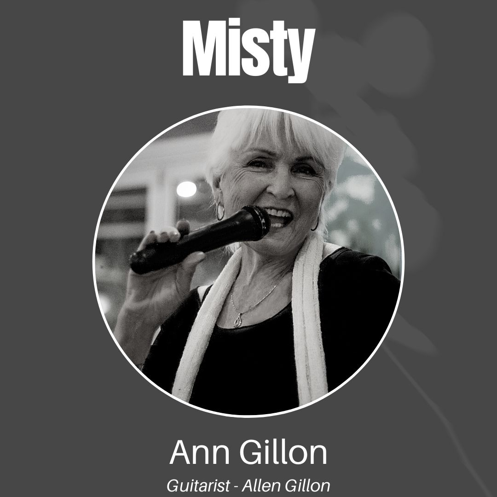
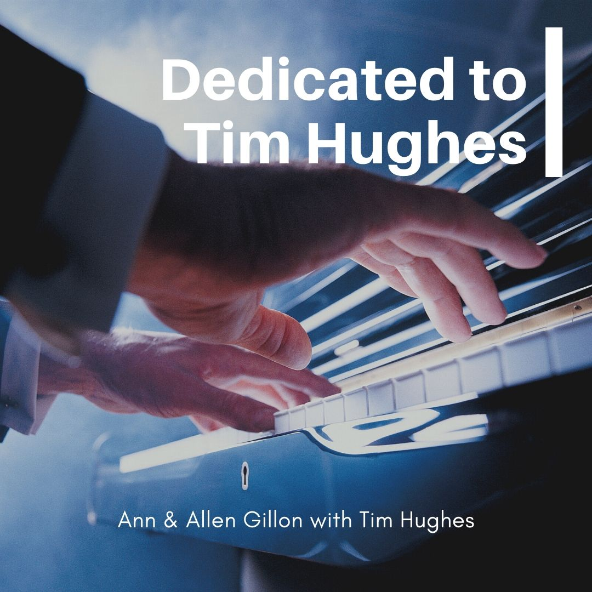

That's The Time
- That's The Time2:26
- You Don't Know Me3:53
- Reminiscing3:57
- Girl From Ipanema2:50
- Dream A Little Dream2:33
- Breezin'3:56
- Corcovado2:03
- Cavatina3:23
- Desafinado3:03
- Isn't She Lovely2:09
- One Day I'll Fly Away4:56
- For The Love Of You3:27
Five albums, recorded in the studio, free to hear right here. Press play on any track. If you would rather have Allen in the room, he still takes bookings.


Allen and Ann have played together since 1967, from Sydney clubs to a convention stage in Chicago. These days the duet is called Timeless: Allen on his Trini Lopez Gibson, Ann on vocals, alto sax and flute.
Their album together is Misty, above. To have Timeless play your restaurant or event, see Hire Allen.
Written by Allen Gillon, filmed for YouTube. More are on the way.